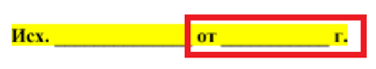
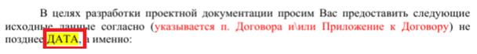

Шаг 1. Согласно схеме ОУП, фиксируем в таблице дату начала этапа. Ей считается дата отправки официального письма Заказчику с запросом исходных данных при запуске проекта:
Шаг 2. Согласно схеме ОУП, фиксируем в таблице дату конца этапа. Ей считается дата, не позднее которой Заказчик должен направить исходные данные:
Шаг 3. Если Заказчиком передан неполный комплект ИД и прошел договорной срок предоставления ИД Заказчиком, то направляется официальное письмо о неполных исходных данных по форме. В этом случае, датой конца этапа считается дата, которая указана в теле официального письма о неполных исходных данных Заказчику.
Шаг 4. По истечению сроков, указанных в письме о неполных исходных данных, направляется официальное письмо о приостановке работ из-за отсутствия исходных данных по форме. Далее, необходимо направить письмо о подготовке ДС по срокам проектирования в БЭК (юристу) по форме. В этой случае, датой конца этапа считается дата приостановки.